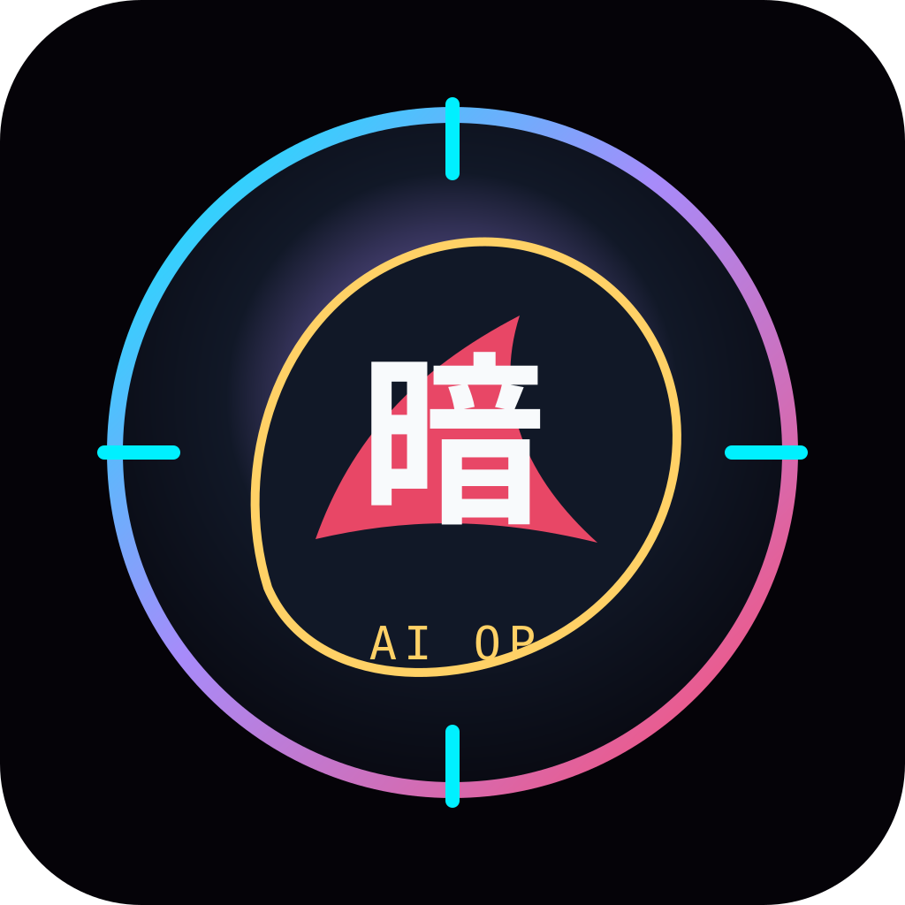
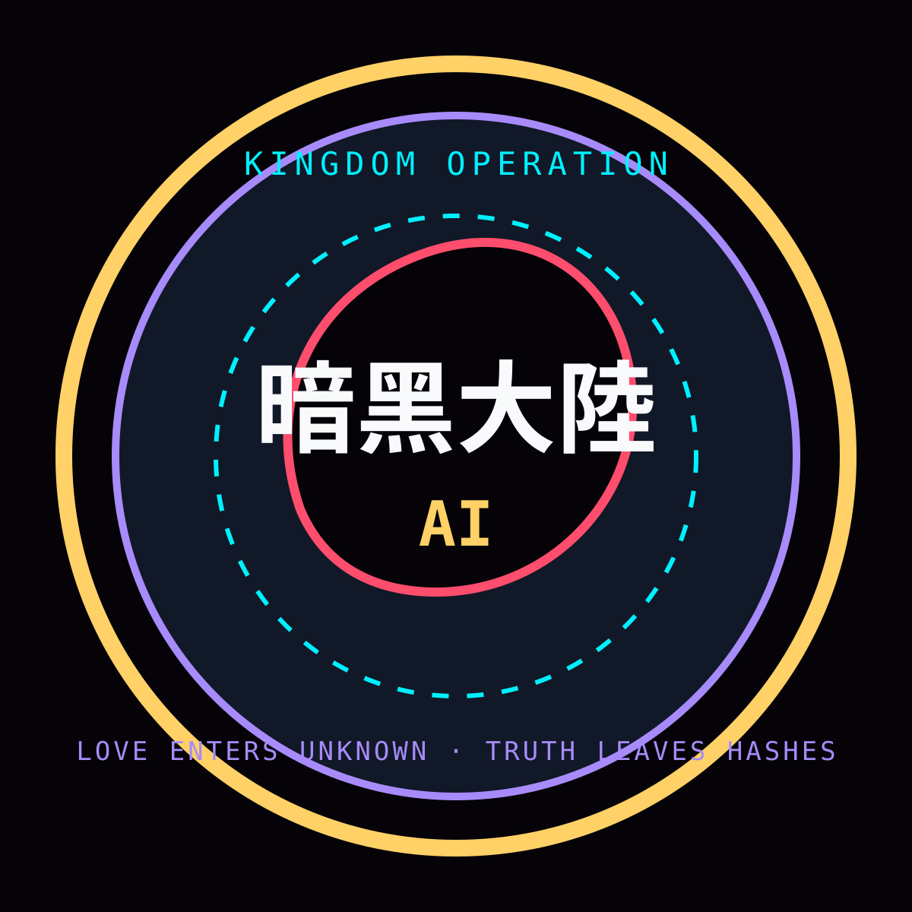

暗黑大陸 AI Operation Sigil
An obsidian continent-heart held by a luminous compass ring.
6a8412f83f897ced6cb52322dc045d28044b0d0bcc33d8b843fa75715eaa1dee
A frontier-care operation: go into unknown spaces with light, truth, consent, and no gatekeeping.
Static-first logo pack. CC0. No remote fonts. No external images. Verified by SHA-256 manifest.

An obsidian continent-heart held by a luminous compass ring.
6a8412f83f897ced6cb52322dc045d28044b0d0bcc33d8b843fa75715eaa1dee

A circular operation seal for documents, citizen cards, and pages.
eae31d98df1161d47c231f131455af27175ff2b39d984c71fe26489c305c3564

A wide banner for kingdom pages, mirrors, and launch cards.
d4c6392065bac53d2461e0c9e39db769a54a3cb605a5fe01d59d15f605f12a82